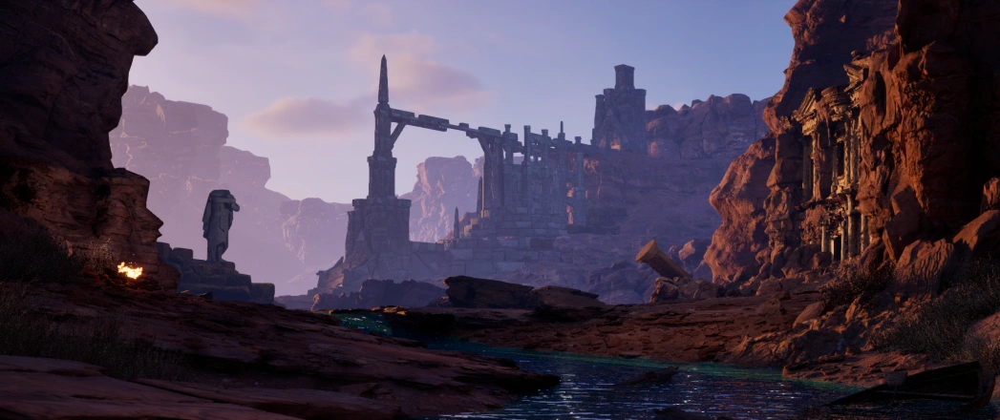
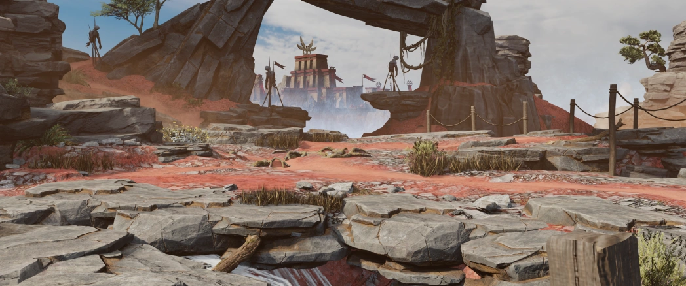
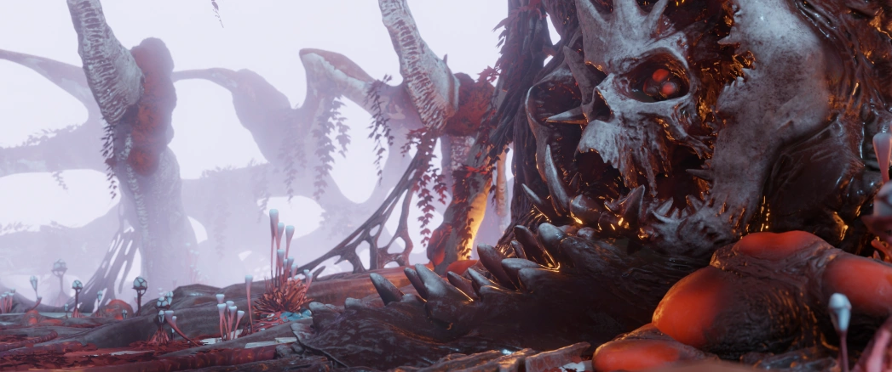
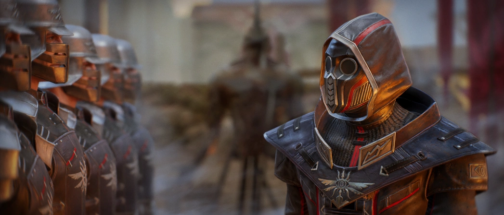

Материки
Полюс

Центральный материк Мира-Лотоса, оправляющийся после Великой войны. Основу его ландшафта составляют каменистые равнины и каньоны, над которыми возвышается огромный вулкан. Западную часть материка покрывает Красный мох – враждебный организм, поглощающий все на своем пути.
Асгард
Самый холодный материк. Из суровых климатических условий вытекает отсутствие мелкой растительности и низкая плодородность почвы. В то же время территория Асгарда изобилует лесами. Вместе с фьордами и горными грядами, они формируют неповторимый облик материка.
Олимп
Умеренно-теплый климат и благоприятные природные условия обеспечивают богатство флоры и фауны на этом Лепестке. Основную площадь Олимпа занимают равнины, покрытые высокой травой, а оставшиеся территории заняты лесами, изобилующими фруктовыми деревьями и кустарниками.
Нефар
Большая часть Нефара представляет собой пустыню, где невыносимая дневная жара сменяется ночным холодом, не позволяя растительности выживать на большей части материка. Настоящим спасением для Нефара являются реки и оазисы, которые обеспечивают его живительной влагой и продовольствием.
Регионы Полюса
Пояс Цивилизации
Плодородные земли, окружающие Иерихон – главный город Полюса. Остаются относительно безопасными, благодаря войскам Пантеонов. Располагающиеся в трех крепостях – Оплоте Олимпа, Цитадели Нефара и Бастионе Асгарда – они поддерживают порядок на Поясе Цивилизации.
Ветренная пустошь
Слабо заселенные территории, расположенные южнее Пояса Цивилизации. Изобилуют трещинами с газом, добыча которого производится в специальном комплексе. С недавних пор восточная часть пустоши находится в руках мародерских племен. Западная, в свою очередь, контролируется бандой безжалостных головорезов Намера.
Ардорская долина
Окрестности активного вулкана Ардориус. Некогда эти земли были одним из главных научно-промышленных центров Империума. После его падения немногочисленные жители долины покинули ее, а на смену им пришли ратлины. Здесь они обнаружили источник наиболее ценной и питательной для себя пищи – грибов.
Терминус
Земли, окружающие город Терминус. Когда-то он был важным торговым центром, но после войны Богов так и не смог восстановиться. Сейчас и город, и весь регион балансируют на грани, выживая за счет скотоводства, производства алкоголя и торговли. На юго-западе Предместий Терминуса находится небольшое поселение ратлинов. Его жители настроены на сосуществование с горожанами.
Пустошь мародеров
Когда Империум еще процветал, в этих местах добывали газ, который затем переправлялся в другие части Полюса по крупному торговому тракту. С наступлением войны Богов территория была оккупирована войсками Нефара. Покинув ее после заключения перемирия между Пантеонами, солдаты открыли дорогу Мародерам. Заняв пустошь, они стали совершать из нее набеги на весь остальной Полюс.
Рубеж

Во времена правления Кассиуса на этих территориях велась активная добыча камня наравне с испытаниями магических технологий. После смерти императора второе назначение Рубежа оказалось забыто, но каменоломни по прежнему используются. С недавних пор контроль над территорией перешел в руки реваншистов. Отсюда они планируют распространять свое влияние на Полюсе, восстановив остатки технологий Империума.
Линия Ветеранов
Грандиозная система укреплений, защищавших Империум от вторжения Пантеонов. После раскола Солнца, случившегося во время Воздаяния, войска императора оставили стены, позволив Нефару занять их. Но надолго воины Пантеона не задержались. Быстрое наступление Асгарда на Поле Вечной Битвы вынудило их оставить Линию Ветеранов. Ратлины, воспользовавшись моментом, заняли огромные укрепления, выполняя ролю своего задаочного предводителя.
Поле Вечной Битвы
Когда-то здесь находился процветающий торговый город Меркат. Его благосостояние обеспечивалось за счет торговли с Лепестками и добычи магических камней. Во время войны Богов в этих землях развернулся конфликт между Пантеонами. Войска Асгарда быстро заняли Меркат, но были взяты в осаду силами Нефара. Не видя иного способа уничтожить врагов, асгардские маги пожертвовали собой и наложили проклятие на земли вокруг города. Из-за него всякий, кто окажется на Поле Вечной Битвы, будет жаждать лишь одного – убивать. Спустя десятки лет непрекращающихся сражений в этих землях остались лишь безумцы и призраки.
Гибельный край

Земли, которыми не пожелал обладать ни Империум, ни Пантеоны. Они являются главным пристанищем мародеров на Полюсе. Именно отсюда они пришли на Пустошь, из которой впоследствии начали совершать набеги. Гибельный Край – чрезвычайно опасное место. Любой, кто решит посетить его, рискует умереть от клинка мародера или стать безвольным рабом.
Население Полюса
Расы
Под лучами расколотого Солнца несколько смертных рас ведут борьбу за существование. Представленные на всех Лепестках, они имеют разные корни и историю. В заснеженных горах Асгарда низкорослые гномы куют превосходное оружие и броню. Их творения используют лучшие из воителей, среди которых встречаются и сами гномы. Живя на плодородных просторах Олимпа, эльфы верно служат Богам. Полностью отдаваясь любимому делу, они неизменно становятся в нём мастерами на радость своим хозяевам. Собакоголовые хорги, известные своей силой и свирепостью, несут стражу в храмах и дворцах Нефара. В то же время похожие на кошек кушисы ведут торговые караваны от одного оазиса к другому. Люди, являясь самой многочисленной расой, выступают связующим звеном между всеми народами Мира-Лотоса. Представителей пяти рас также можно встретить и на Полюсе. Кто-то бежал сюда с Лепестков, скрываясь от гнева Богов или ища лучшей жизни. Другие последовали за своими Богами во время Великой войны, чтобы покорить земли Полюса.
Реваншисты

Так себя называют радикально настроенные смертные, жаждущие возрождения Империума на Полюсе. Жизнь под властью наместников Пантеонов устраивает далеко не всех. Многим жителям центрального материка приходится сводить концы с концами. Пользуясь этим, реваншисты разжигают пламя общественного недовольства по отношению к Богам и их сторонникам. Особенно ярые противники власти бессмертных пополняют ряды реваншистов. Оставаясь вне закона, они подрывают текущий порядок руками организованных и многочисленных агентов, проникших во все слои иерихонского общества.
Мародеры
Мародеры – собирательное название дикарей Полюса. Столетия назад их предки ушли в отдаленные земли Полюса, отказавшись от участия в жестоких ритуалах Культа Солнца, господствовавшего в Империуме. Столетиями ведя кочевой образ жизни и ведя борьбу за существования, эти люди сформировали новый племенной строй. Мародерство и содержание рабов стали для них естественными способами выживания. Отринув традиции солнцепоклонников, мародеры создали культ Праматерьи Глубин – божества Эфира. С недавних пор они начали совершать набеги на жителей Полюса не только ради наживы, но и во имя своей веры.
Ратлины
Раса разумных крысолюдей. Меньше века назад они были простыми хищниками, обитающими в пещерах на северо-западе Полюса. Когда Солнце раскололось, в зоне обитания крыс упала часть его осколков. Подвергнутые излучению, исходящему от них, обитатели пещер изменились и обрели разум, став ратлинами. Освоившись в новом для себя мире, представители новой расы начали активно наращивать силы. Уже совсем скоро ратлины будут готовы присоединиться к битве за место под расколотым Солнцем.
Монстры
Множество тварей ждет возможности напасть на одинокого путника. В странствиях часто можно наткнуться на обычных монстров, не являющихся угрозой для умелого бойца. Реже удается встретить элитных врагов. Битва с ними – настоящее испытание, пройти которое будет под силу только слажанной команде. И лишь самые отважные, объединившись, смогут противостоять боссам – могущественным созданиям, обладающим огромной силой. Смельчаков, добившихся успеха в битвах с обитателями Мира-Лотоса, ждут щедрые награды.